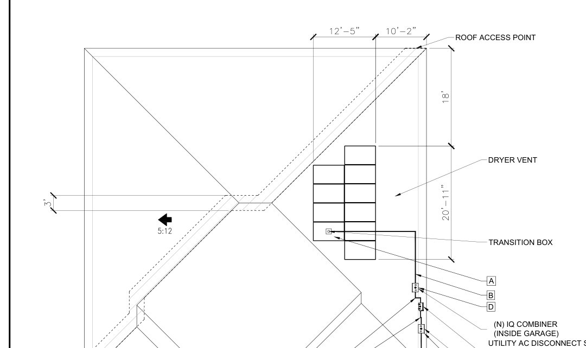
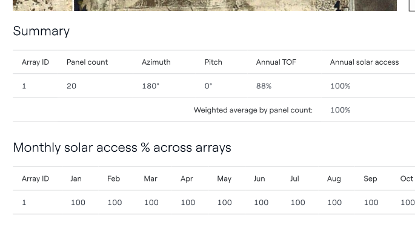
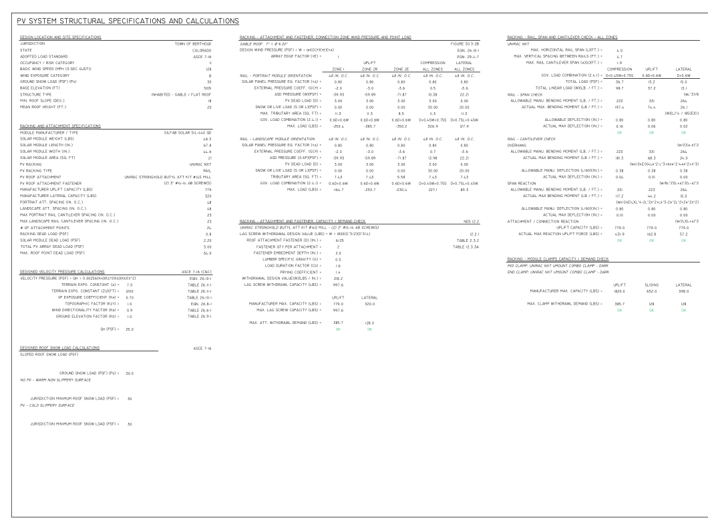

PV Layout
Roof / Array Layout
Module placement, roof geometry, access points and equipment-routing documentation.
PV design professional with five years of solar-industry experience across system design, site assessment, shading and load analysis, PV plan sets, electrical and structural documentation, permitting support, and utility interconnection workflows.
Experienced in PV system modeling and design using AutoCAD, Aurora Solar, Solargraf, Nearmap and related tools. Work includes PV array layouts, electrical sheets, structural sheets, bills of materials, permit packages, shading analysis, site assessment, system sizing, QA/QC, AHJ coordination and utility interconnection support.
Site assessment • Shading analysis • Load analysis • System sizing • PV system modeling • Array layouts • Design QA/QC
AutoCAD • PV plan sets • Electrical sheets • Structural sheets • Single-line diagrams • Bill of materials • Permit packages
Aurora Solar • Solargraf • Nearmap • Salesforce CRM • Utility interconnection • AHJ permit coordination • Net metering analysis
Develops proposal design solutions from client requirements and coordinates with cross-functional and sales teams to align project specifications and goals.
Performed site assessments, technical drawings, shading analysis, design QA/QC, utility coordination, PV installation drawings and electrical single-line diagrams for permitting and construction.
Used AutoCAD, Aurora Solar, Nearmap and Google Earth for PV modeling and plan-set development, including array layouts, electrical sheets, structural sheets and BOMs; supported electrical standards and energy-storage integration.
Designed and optimized PV systems for residential, ground-mounted, carport and community projects; prepared electrical, structural and permitting documentation and supported project execution through Salesforce CRM.
Portfolio samples are sanitized for professional presentation. Select any preview to open the full work-sample PDF.

Module placement, roof geometry, access points and equipment-routing documentation.

Solar-access and array design reference used to support PV layout decisions.

Structural specifications, attachment/racking calculations and design checks.
Review site information, roof characteristics, electrical data and project requirements.
Develop module placement and system layout based on site conditions and project requirements.
Prepare relevant electrical, structural and equipment documentation.
Perform shading, load, system-sizing and design review activities as applicable.
Develop PV plan sets and supporting permit documentation.
Check design accuracy and incorporate required revisions and coordination feedback.
Bachelor of Science in Electronics and Communication Engineering, EARIST – Manila. Full employment history, technical skills and professional details are available in the resume.
Available for PV design, solar CAD and solar design/engineering-related opportunities.
Email
kennethfronda24@gmail.com
Location
Imus City, Cavite, Philippines